Pokémon Red — Everything about the Collisions
Mar 17, 2026 · Hong-Sheng Zheng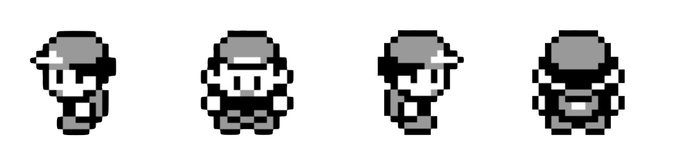
This is my first time digging into Pokémon Red. I found it interesting, so I’m sharing it here :) About the Collision.
In Pokémon Red (and Blue), every step you take is governed by collision: which tiles you can stand on, where grass and water are, and how NPCs interact with the map. This post walks through how collisions work under the hood.
What “Collision” Means Here
If you’ve played games before, you already know what collision feels like: you try to move forward and you stop, you can’t go any farther. That’s collision, whether it’s a wall, another NPC in the way, or even an NPC that’s moving. In this post, “collision” means whether a given step is walkable, that is, whether you can stand on it. For example, you cannot stand on the same tile as an NPC. Many 2D games use a collision layers for their collision mechanism. Pokémon Red (Gen1) does not. Instead, each map (e.g. Pallet Town, Professor Oak’s lab) keeps its own walkable list, a list of every tile you can stand on in that map. That design may come from early ROM size limits or other historical reasons; either way, collision is tile-based and per-map.
For example, the image on the right shows which tiles from Pallet Town’s Oak’s Lab (left) are on the walkable list. Each tile has its own tile ID in the tileset for this map, and each tile is 8×8 pixels.
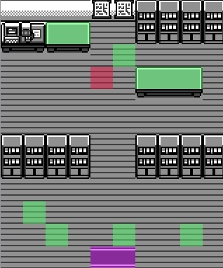
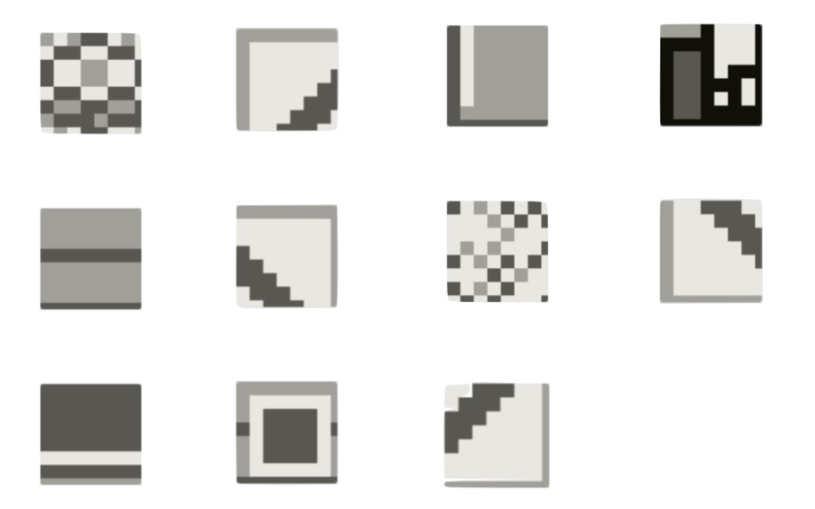
Seeing the walkable tiles on the right raises a question: if you look closely, the walkable area seems to be “just the floor”, so aren’t those the same tile? In the rest of this post I’ll clarify how this works step by step. (By the way, ignore the color overlays in the left image for now; they just mark the positions of NPCs, warps, trainers, and the like.)
Map Structure: Block → Step → Tile
So a map is made of blocks; each block has a 2×2 grid of steps, and each step is 2×2 tiles. To make this concrete, let use Pallet town as an example. The left image shows the full map, each grid cell is one block (32×32 pixels). The right image zooms in on a single block, it has a 2×2 grid of steps, and each step is 2×2 tiles. So one tile is only 8×8 pixels, pretty small.
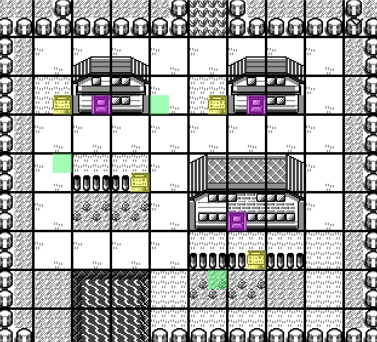
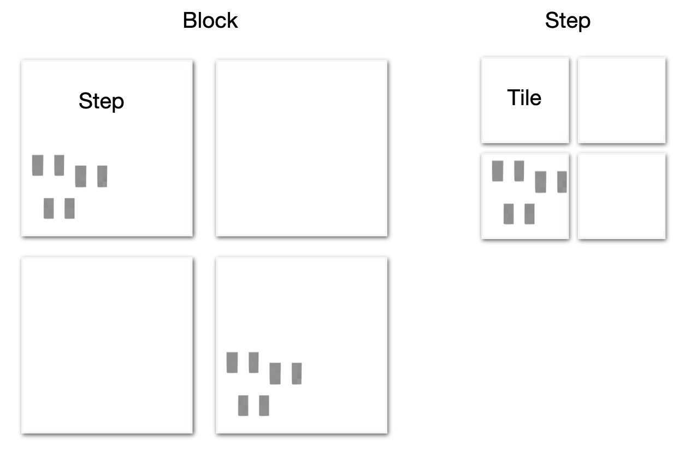
To sum up:
| Layer | What it is | Size / relation |
|---|---|---|
| Map | One full map | width_blocks × height_blocks blocks |
| Block | One cell of the map | 1 block (16bytes) = 2×2 steps |
| Step | The unit of movement | 1 step = 2×2 tiles |
| Tile | Smallest graphic unit | 8×8 pixels, has a tile ID (0x00–0xFF) |
Walkable?
After the structure we saw above, you might wonder: if collision is decided per tile, the character seems bigger than a single tile, right? First, where does the character sprite actually stand? If you look at RED’s position in the left image, you’ll see that the sprite isn’t aligned to the tile grid, it’s offset by 4 pixels on the y-axis. That’s just a rendering choice, in logic, the game still treats the sprite as being on the correct position. When drawing, it shifts the sprite up by 4 pixels. So RED is standing on one step (four tiles), not counting the extra tile the sprite overlaps above. Movement is also in steps, each press of a direction key moves RED one step.
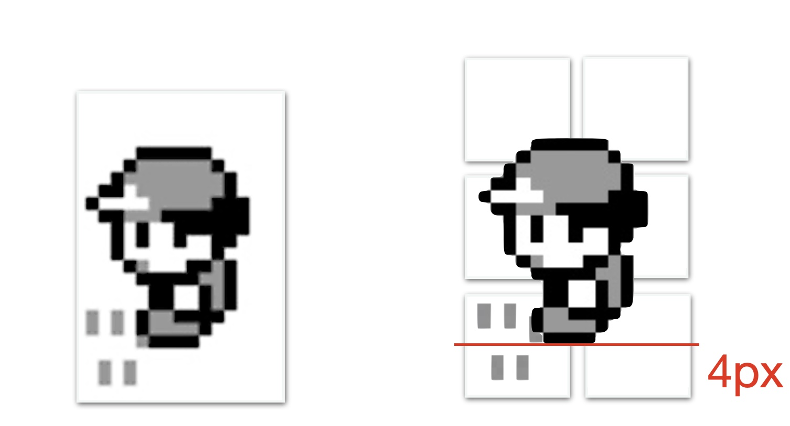
But collision is checked per tile. A step has four tiles, yet Pokémon Red doesn’t look at all four, it only checks one tile: the bottom-left one. The image below shows this. So no matter which direction you move, the game decides whether the step is allowed by checking if that bottom-left tile is in the walkable list.
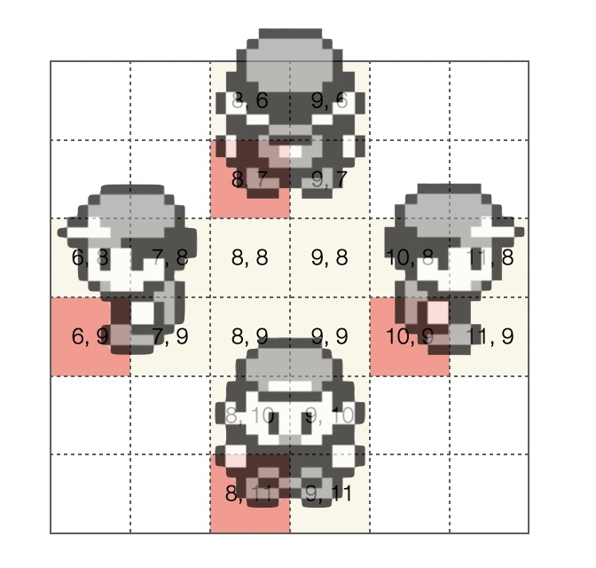
Back to the Oak’s Lab walkable list, if you look at which tiles actually appear in Oak’s Lab, you’ll see that the only tiles that match the “bottom-left tile when you step” are the wooden floor and the carpet by the door. The other tiles in the walkable list don’t show up in that map. That’s because one tileset is reused across many maps. The game reuses tiles as much as possible to keep the number of tilesets down, but when marking a tile as walkable in a tileset, the designers had to be careful not to create unexpectedly walkable spots on maps that use that tileset.
Sprites collision
Sprites collision works differently from tile collision. It is sprite against sprite, the game uses the two sprites’ screen pixel coordinates to compute distance. If they are close enough, it counts as a collision.
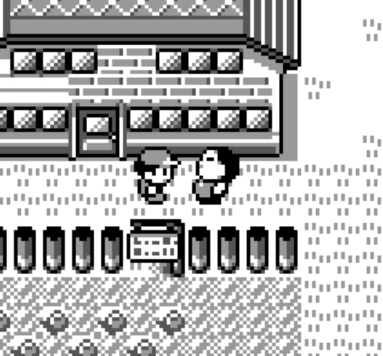
Each frame the game calls a function to detect collisions between sprites. For the current sprite (the player), it computes where the “front edge” of the body would be after moving in the chosen direction. It then loops over every visible sprite on screen (up to 15) and computes each one’s front edge or position the same way. If the distance in both Y and X is within the threshold (about 7 pixels when still, about 9 when moving), it counts as a collision and sets a direction bit in a collision data word (one bit per direction: up, down, left, right). When the player presses a direction key, the game reads the relevant bit from that collision data and ANDs it with the direction for this frame. If the result is non-zero, there is an NPC in that direction, so movement is blocked. So who collides with whom is decided in pixels, and whether you can move depends on both the tile and these updated bits (a sprite may be in the way).
How does the game know which NPC or object is in front of you? That determines who you talk to. It loops over all NPC and object sprites and checks whether any sprite’s y pixels and x pixels match the “check point” used for the forward collision test (that gets stored in an id; objects work the same way, so when you use Strength to push a boulder the game uses this to know which object it is). That is how it decides who or what is in front of you.
One exception: what if you are facing a counter? If the tile in front is a counter tile, the check uses 32 pixels ahead instead of 16. That is why you can talk to Joy in Pokémon Center across the counter. So you can see the gap between RED and Joy is one step.
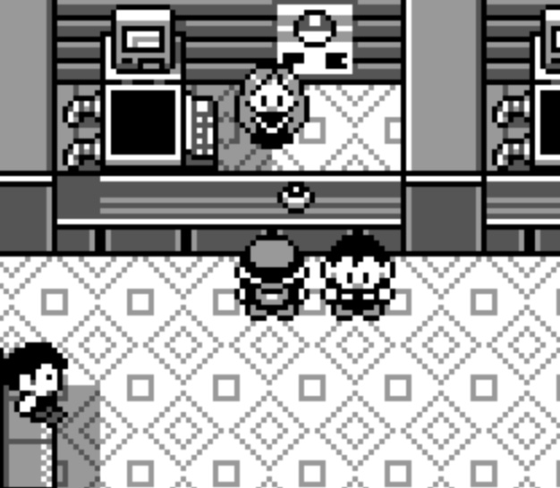
A few more things about NPCs:
- NPC positions and the map border. At runtime the map has a 4-step border on all sides. When you read WRAM, the Y/X coordinates use that full grid (including the border) as the origin. To get an NPC’s actual position on the map you have to subtract 4 from that value. I ran into this when loading the whole map and computing character positions, every sprite (NPC or object) was offset until I realized this border was the cause. You have to apply that -4 to get the real position. In the figure below, the left ASCII map shows the uncorrected case: the NPC (N) is offset and gets clamped at the border. The middle map is the corrected one (with the -4 adjustment applied).
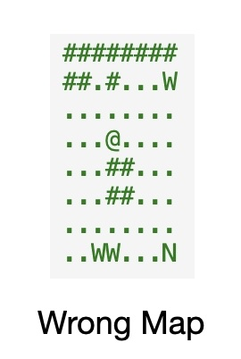
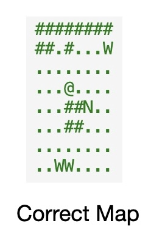
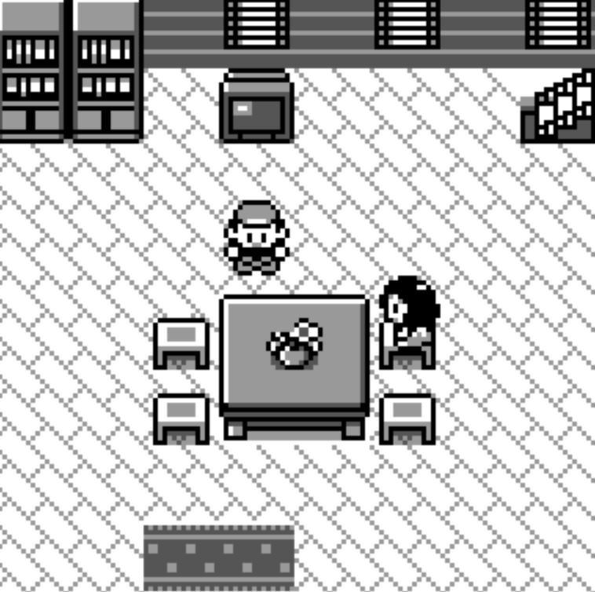
- Invisible sprites. A sprite can be hidden in two cases: (a) it is off screen, or (b) it is a placeholder. Off screen is straightforward: you can still find the sprite in data, but a “visible” bit is set to 0. What is a placeholder? In Pallet Town (see the image below) one NPC is not on screen: Professor Oak (marked N in the diagram). When you first enter Route 1 the story triggers and Oak appears from this hidden spot, then moves next to you and takes you back to Oak’s lab. The game uses this pattern in many places for scripted events. In this case, these sprites do not collide with you. Each frame the game runs the sprite collision check and does this first: if the bit in that sprite’s data is set, the game skips it and does not count it as colliding with the player.
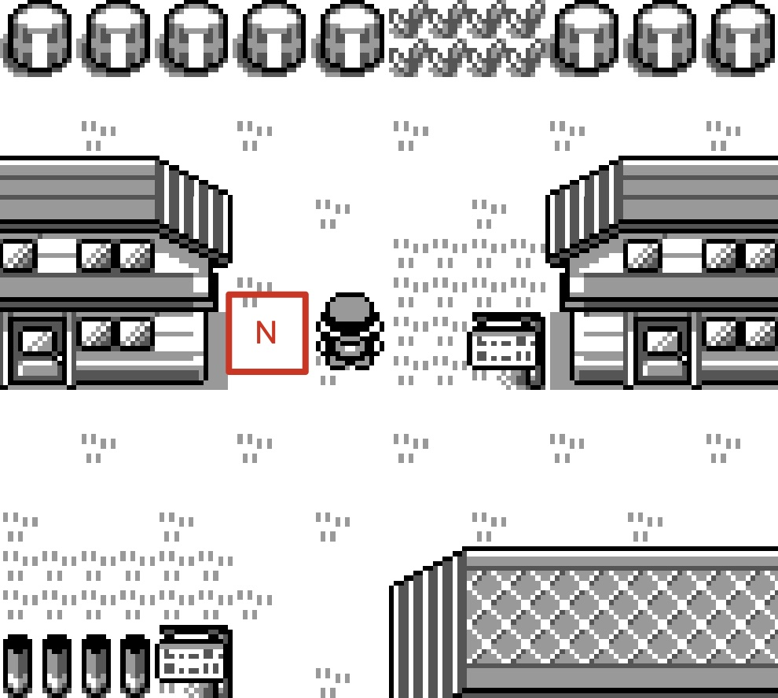
Ledges (one-way jump down)
You have seen those short ledges in the overworld where you can step off and drop down, but you cannot walk back up from below. The game calls these “ledges” and handles them separately from normal tile collision.
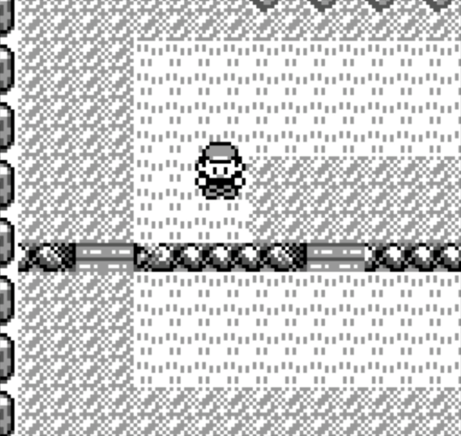
Ledge Tile IDs:
0x37,0x36,0x27. High Groud Tile IDs:0x2C,0x39
Collision is still tile-based: the tiles that form the “cliff” (e.g. 0x37, 0x36, 0x27) are not in the walkable list,
so normally you cannot step onto them.
So how can you land on a ledge tile when you jump down?
The game uses a small table, LedgeTiles. Each entry is (facing, tile under your feet, tile in front, direction key). For example: facing down, standing on tile 0x2C or 0x39 (high ground), with a ledge tile (0x37, 0x36, etc.) in front, and you are holding down.
When that matches, the engine does two things in order.
- It sets a flag (BIT_LEDGE_OR_FISHING) meaning “next frame treat this as a ledge jump”.
- It queues a simulated “down ↓” input for the next frame.
On the first frame the usual collision still runs, so you do not move yet (the ledge tile is not walkable).
On the next frame the simulated input runs again, but this time the collision code sees the flag and skips the “can I walk onto this tile?” check, so the game allows you to move onto the ledge tile and you land below.
From the lower side, your feet are not on 0x2C/0x39 and the tile in front is still not in the walkable table, so you can never walk up. That is why ledges are one-way, only the “high to low” direction is special-cased with the flag and the extra simulated step.
Refernece code:
LedgeTiles:
; player direction, tile player standing on, ledge tile, input required
db SPRITE_FACING_DOWN, $2C, $37, PAD_DOWN
db SPRITE_FACING_DOWN, $39, $36, PAD_DOWN
db SPRITE_FACING_DOWN, $39, $37, PAD_DOWN
db SPRITE_FACING_LEFT, $2C, $27, PAD_LEFT
db SPRITE_FACING_LEFT, $39, $27, PAD_LEFT
db SPRITE_FACING_RIGHT, $2C, $0D, PAD_RIGHT
db SPRITE_FACING_RIGHT, $2C, $1D, PAD_RIGHT
db SPRITE_FACING_RIGHT, $39, $0D, PAD_RIGHT
db -1 ; endLand and water boundary
Water uses tile ID 0x14. On land, that ID is not in the walkable list,
so the game never lets you step onto water by walking.
A second rule is the land–water pair table TilePairCollisionsWater,
certain (tile A, tile B) pairs are marked as “do not cross in one step”.
So moving from a land tile onto a water tile in a single step is blocked.
You cannot cross the shore by walking, you must use move Surf.
TilePairCollisionsWater::
db FOREST, $14, $2E
db FOREST, $48, $2E
db CAVERN, $14, $05
db -1 ; endBut how Surf gets you onto water?
When you use Surf,
the game calls ItemUseSurfboard function.
It first checks tile in front of you is 0x14 (water) or a shore tile (e.g. 0x32, 0x48), if so, Surf is allowed. I
t then:
- queues one simulated “forward →” input
- sets wWalkBikeSurfState = 2 (surfing)
On the next frame the overworld handles that input, because you are already in surf state, it uses CollisionCheckOnWater collision function for water instead of land collision.
The tile in front is 0x14, so the game allows the move and you step onto the water. So this is how you getting onto water by using Surf.
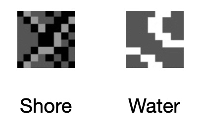
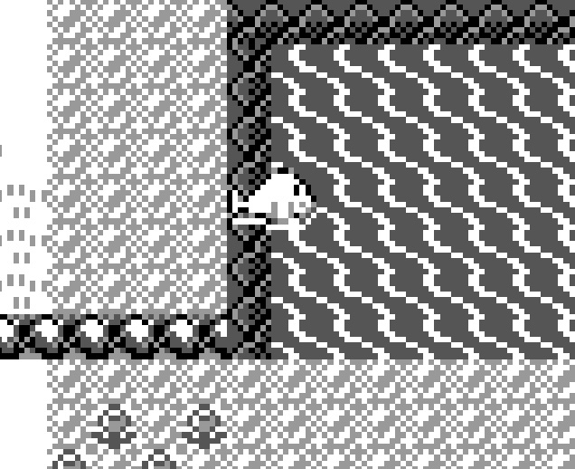
In the reverse, you get off Surf and stand on land if it’s walkable land. So land vs water is the same “one tile in front”, only the interpretation changes (land collision says “0x14 = block”, surf collision says “0x14 = allow’).
Summary
Thanks for reading. This post is a bit of my journey while trying to understand how collision works in Pokémon Red. I hope it helps if you are digging into the same thing, or if you just happened to pass by and found it interesting.
Further Reading
- pret/pokered — Disassembly and data layouts.
- Data Crystal: Pokémon Red/Blue RAM map — Byte-level WRAM reference.
- Vjeux – Pokemon Red/Blue Map — Full Kanto map rendering.